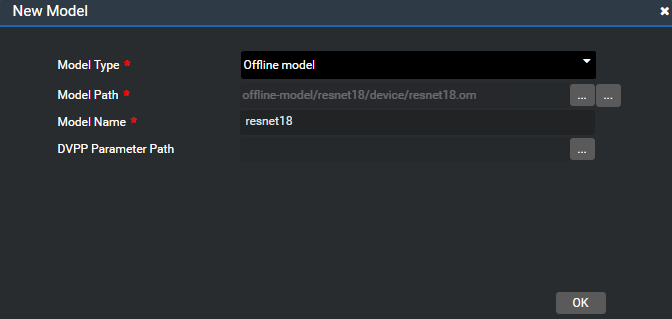

Importing an Offline Model
A converted offline model file can be added to the project directory for project development. The operations are as follows:
Import an offline model.
Select a project, click Model > My Model on the tool tab page on the right, and click +. The New Model dialog box is displayed. Table 1 describes the parameters in the dialog box. Figure 1 shows the New Model dialog box.
Figure 1 New Model dialog box
Table 1 Parameters in the New Model dialog box
 NOTE:
NOTE:
An encrypted model cannot be added.Click OK.
Begin engine orchestration using the model file.
The imported model is displayed in the My Models area on the right, as shown in Figure 2. Drag the model to the canvas for engine orchestration.
Develop a custom project using the model file.
During code development, directly reference the path of the custom model file imported to the project.